Nitin Balaji
Incoming Computer Science Student
University of California, Berkeley
College of Computing, Data Science, and Society
Regents' & Chancellor's Scholar
I'm passionate about software engineering, artificial intelligence, and aerospace. I thrive on building technology that solves real-world problems while creating opportunities for others through leadership, teaching, and community service.

-
UC Berkeley
Computer Science
-
Northrop Grumman
Engineering HIP Intern
-
Software Engineering
Full Stack Development
-
Community Impact
150+ Students Helped

About Me
I'm a passionate Computer Science student at UC Berkeley's College of Computing, Data Science, and Society, recognized as a Regents' & Chancellor's Scholar. My journey in technology has been driven by curiosity about solving complex problems and making a tangible impact on the world.
I'm deeply interested in software engineering, artificial intelligence, and aerospace technology. Beyond coding, I'm committed to education and community service—I've founded Coding4Cause, a nonprofit teaching Python to refugee students, and have maintained a passion for tutoring across multiple subjects.
My experience spans full-stack development, machine learning, and technical leadership. At Northrop Grumman, I dove into aerospace engineering workflows and mission systems. Through Open Coding Society, I led both frontend and backend architecture on an assignment management platform serving the entire student body.
Experience
-
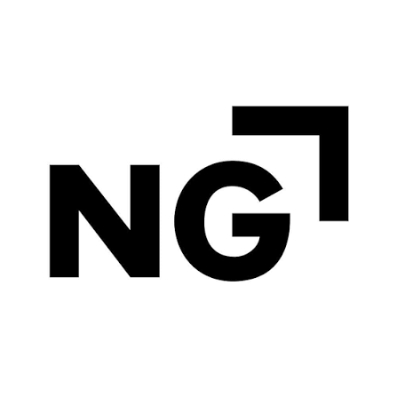
Engineering HIP Intern
Northrop Grumman
Nov 2024 – Present
Working in aerospace and defense, learning cutting-edge engineering workflows, aerospace systems design, and mission systems architecture. Collaborating cross-functionally with experienced engineers on technical problem-solving and real-world systems engineering.
- Aerospace Systems
- Mission Systems
- Technical Problem Solving
- Cross-functional Collaboration
-
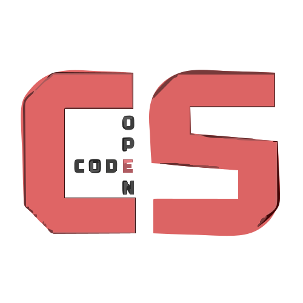
Full Stack Developer
Open Coding Society
Aug 2023 – Jun 2025
Led the design and implementation of an assignment management platform serving the entire student body. Architected both frontend and backend systems, designed database schemas, defined API contracts, and coordinated team efforts across full-stack development.
- Frontend Leadership
- Backend Leadership
- API Architecture
- Database Design
- Team Coordination
-
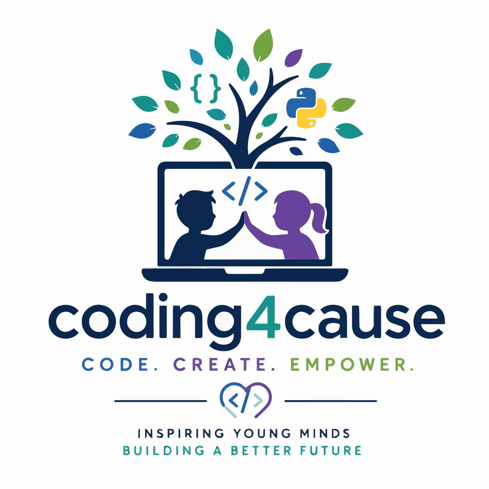
Founder & Tutor
Coding4Cause
2022 – 2026
Founded a nonprofit initiative dedicated to teaching programming to refugee and underserved students. Developed curriculum in Python, built a supportive learning community, and provided mentorship to over 30 students pursuing tech careers.
- Nonprofit Founding
- Curriculum Development
- Community Building
- Python Instruction
- Student Mentorship
-
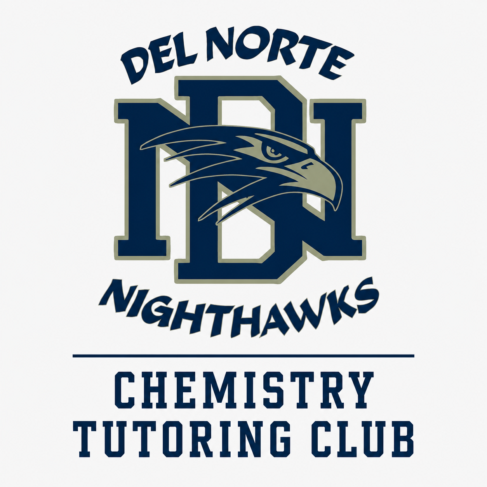
President
Del Norte High School Chemistry Tutoring Club
2024 – 2026
Led and coordinated the chemistry tutoring club, recruiting and training tutor volunteers, organizing 30+ tutoring sessions, and helping over 150 students succeed in chemistry courses.
- Club Leadership
- Tutor Recruitment
- Session Coordination
- Student Support
-
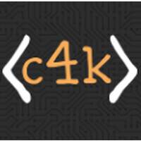
Vice President
Coding4Kidz
2023 – 2024
Drove curriculum innovation and recruitment as Vice President. Added comprehensive machine learning and OpenAI modules to the K-8 curriculum, expanded outreach to younger students, and helped recruit talented instructors.
- Machine Learning Curriculum
- OpenAI Integration
- K-8 Outreach
- Recruitment
-
S
STEM Tutor
2022 – Present
Provided personalized tutoring across multiple STEM disciplines, including physics and comprehensive chemistry (general, organic, and AP Chemistry). Specialized in breaking down complex concepts, building conceptual understanding, and developing strong problem-solving skills for high school and college students.
- Physics Instruction
- Chemistry Instruction
- AP Chemistry
- Problem Solving
- Concept Mastery
Leadership
-
Coding4Cause
Founder
Founded a nonprofit dedicated to teaching programming to refugee and underserved students. Built a supportive learning community and mentored 30+ students.
- Community Impact
- Nonprofit Founding
- Mentorship
-
Open Coding Society
Full Stack Technical Lead
Led full-stack architecture and development of an assignment platform serving the entire student body. Coordinated team across frontend, backend, and database design.
- Technical Leadership
- Team Coordination
- Architecture
-
Chemistry Tutoring Club
President
Coordinated 30+ tutoring sessions and helped 150+ students succeed in chemistry. Built and managed a team of volunteer tutors.
- Club Leadership
- Team Building
- Community Service
-
Coding4Kidz
Vice President
Drove curriculum innovation by adding machine learning and OpenAI modules. Led K-8 outreach initiatives and recruitment efforts.
- Curriculum Innovation
- K-8 Outreach
- Recruitment
Featured Projects
-
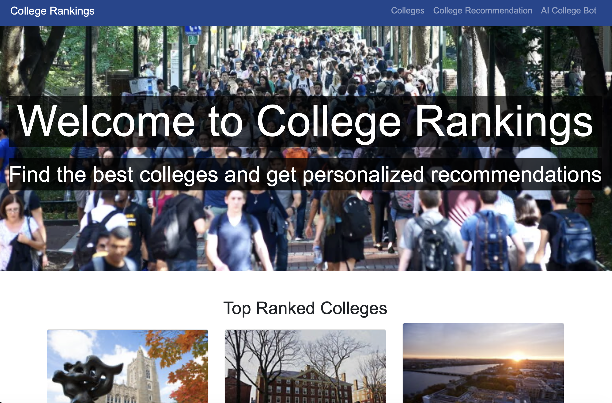
College Assistant Bot
An AI-powered chatbot combining supervised machine learning with OpenAI's API. Trained on course materials to provide intelligent tutoring and answer student questions. Designed as part of Stanford's Machine Learning specialization.
-
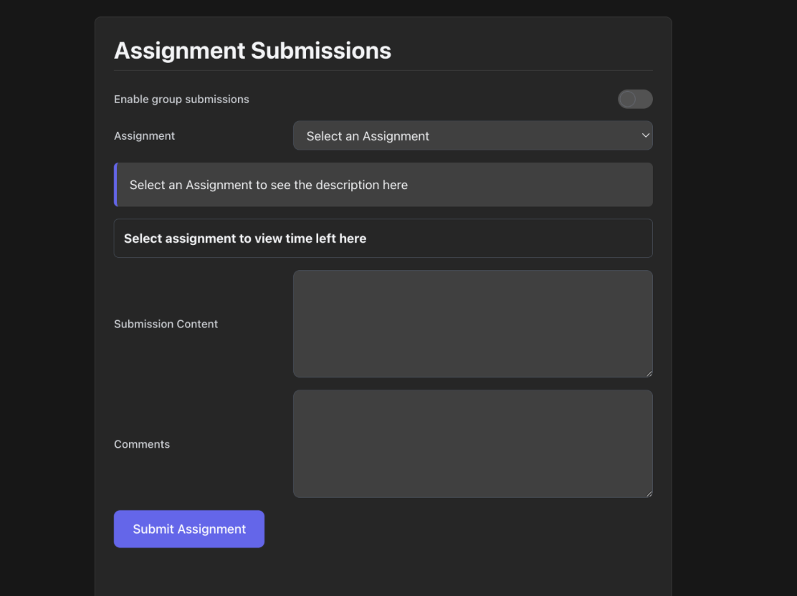
Assignment Management Platform
Full-stack application serving the entire student body for assignment submission, grading, and feedback. Built with React frontend and Node.js backend, featuring real-time notifications and collaborative features.
-
Coding4Cause
A nonprofit initiative providing free Python programming education to refugee and underserved students. Developed curriculum and built a mentorship program.
Certifications & Awards
-
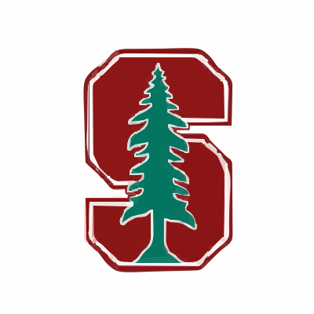
View CredentialSupervised Machine Learning: Regression and Classification
Stanford University
Comprehensive machine learning specialization. Built a College Assistant Bot combining supervised learning with OpenAI-powered conversational AI.
-
View Credential
Java Programming for Complete Beginners
Udemy
Comprehensive Java programming course covering object-oriented principles, data structures, and application development.
-
View Credential
Python and Flask Bootcamp
Udemy
Advanced Python development with Flask framework, covering web application architecture, databases, and deployment.
-
HIP Mentoring Program
Northrop Grumman
Selective engineering mentorship program providing hands-on experience in aerospace systems and engineering practices.
-
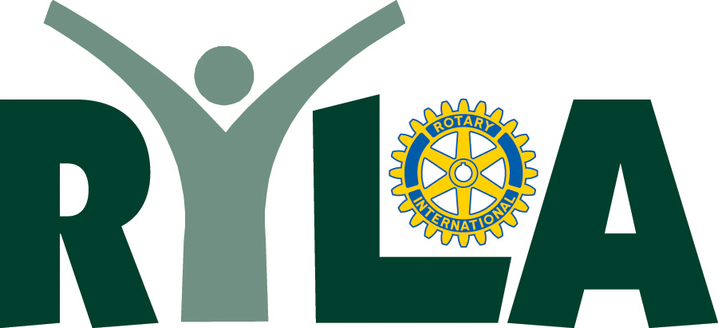
Rotary Youth Leadership Award
Rotary District 5340
Recognition for youth leadership, community service, and commitment to making a positive impact on society.
Interests & Passions
-
AI & Technology
Deeply passionate about artificial intelligence, machine learning, and emerging technologies shaping the future. Fascinated by LLMs, generative AI, and their applications in solving complex problems. I explore how AI can enhance human creativity, automate workflows, and drive innovation across industries.
-
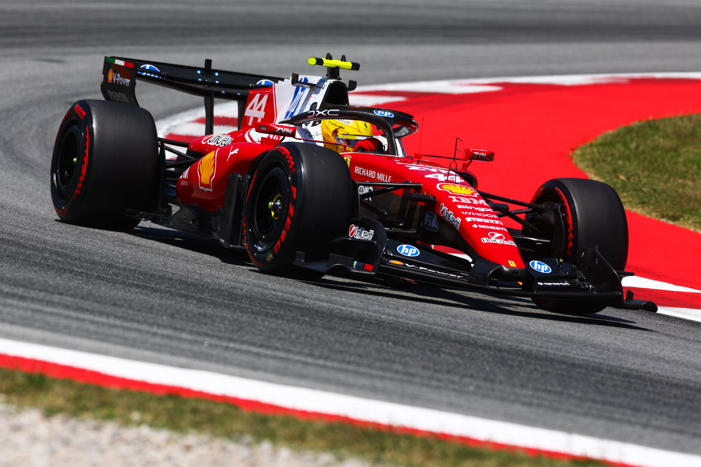
Formula 1
Passionate about the sport of Formula 1, captivated by the engineering excellence, speed, and strategy. Favorite teams: Ferrari and Mercedes-AMG Petronas. Inspired by Lewis Hamilton's skill and determination. I'm deeply interested in racing technology, aerodynamics, and automotive engineering.
-
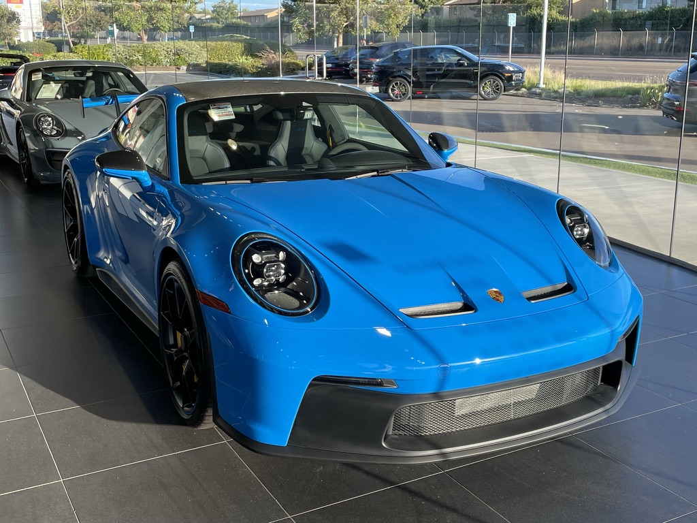
Cars & Automotive Engineering
An enthusiast for high-performance sports cars, particularly Porsche. Fascinated by automotive engineering, precision manufacturing, and the craftsmanship that goes into building exceptional vehicles. I enjoy learning about powertrain systems, aerodynamics, and vehicle dynamics.
-
Photography
A visual storyteller who captures moments through photography. Specializing in automotive and travel photography, I find beauty in motion, landscapes, and cultural experiences. Photography allows me to document my adventures and share perspectives with others.
-
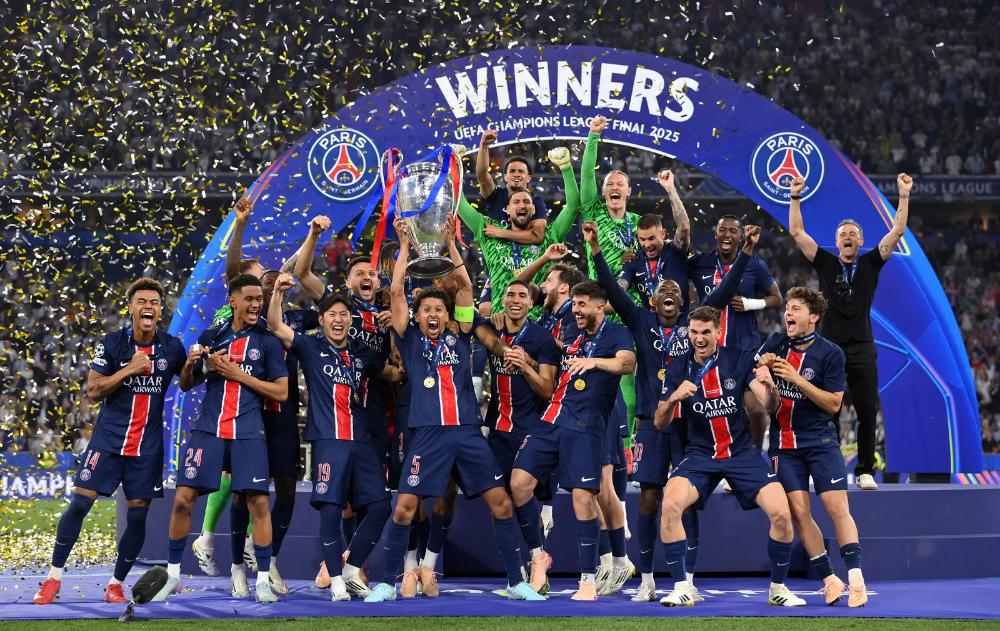
Sports
Enthusiastic soccer fan supporting Paris Saint-Germain (PSG) and Manchester City. Also an NFL fan appreciating the strategy and athleticism of American football. Sports teach me teamwork, resilience, and the value of excellence through dedication.
-
Travel
An avid traveler who loves exploring new places, experiencing different cultures, and understanding diverse perspectives. Travel broadens my horizons, provides inspiration for creative thinking, and reminds me of our world's incredible diversity and beauty.
Get In Touch
I'd love to hear from you! Whether you're interested in collaboration, have a great project idea, or just want to chat about tech, aerospace, or anything else, feel free to reach out.
Start a Conversation